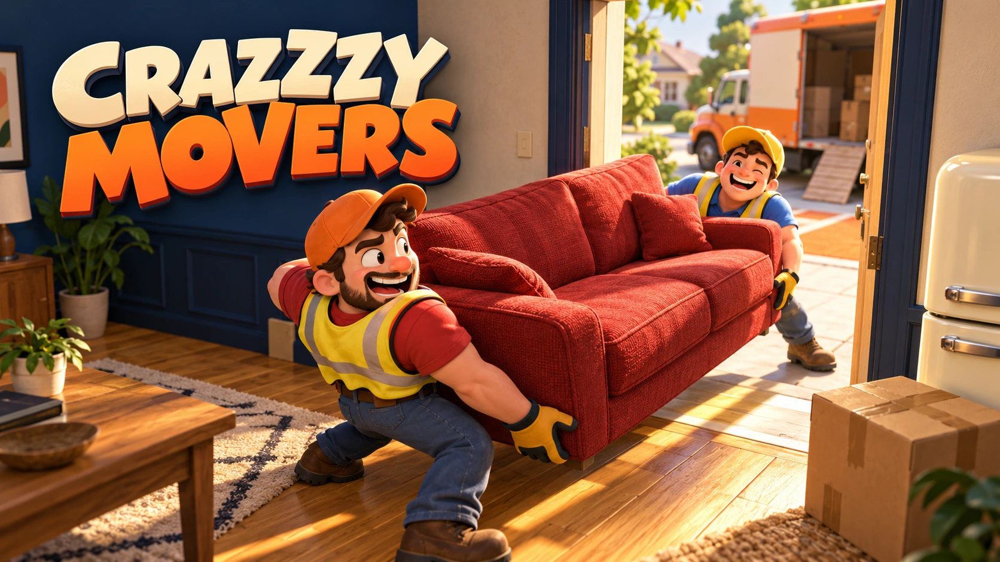

作品概要
個性の異なる相棒と一緒に、家具の運び方や休憩のタイミングを考えながら、全30現場に挑みます。
Crazzzy Moversは、相棒と協力して家具や段ボールを運び出し、最後にトラックへ積み込む3D引っ越しアクションゲームです。家具の形や重さ、狭い通路、体力に気を配りながら、現場ごとの搬出と積み込みに挑みます。
ゲーム / 3D引っ越しアクション
相棒と協力して家具を運び、トラックへ積み込む3D引っ越しアクションゲーム。
個性の異なる相棒と一緒に、家具の運び方や休憩のタイミングを考えながら、全30現場に挑みます。

Quick Look
個性の異なる相棒と一緒に、家具の運び方や休憩のタイミングを考えながら、全30現場に挑みます。
Crazzzy Moversは、相棒と協力して家具や段ボールを運び出し、最後にトラックへ積み込む3D引っ越しアクションゲームです。家具の形や重さ、狭い通路、体力に気を配りながら、現場ごとの搬出と積み込みに挑みます。
「引っ越し作業って、そのままゲームにすると意外と面白いのでは？」という発想から始まりました。大きな家具をどうドアから出すのか、誰と一緒に運ぶのか、軽い荷物を先に片付けるのか。実際の現場にある小さな段取り判断を、短いプレイの中で何度も発生させることを目指しています。
複雑な物理演算をそのまま再現するのではなく、「家具を運んでいる感覚」を安定したゲームとして作ることを重視しています。家具の大きさや形状に応じて壁やドアとの当たり判定を取り、段ボールは軽快に、冷蔵庫は重く、ソファは長くて曲がりにくく感じられるよう、家具ごとにプレイフィールを変える方針です。
万能型のMack、慎重派のYui、素早いRiku、体力のあるGen-sanの4人から相棒を選びます。体力や通路の状況を見ながら家具を回転させたり、休憩したりして搬出します。
冷蔵庫などの重い家電とグランドピアノは2人で運びます。箱の連続搬出を相棒に任せたり、現場によっては植物を最後に運んだりと、荷物ごとの作業を考えましょう。
荷物を外へ運び出したら、トラックのマスに配置します。荷物を回転させたり、配置を取り消したりしながら、積み込みを進めます。
キャンペーンは全30現場。クリアすると次の現場が解放され、ランクが低くてもクリア扱いになります。現場が進むと猫やバリケード、壊れやすい家具、階段、エレベーター、雨や暑さなどが登場します。
CPU CO-OPでは、画面上のボタンや文字・音声で相棒に指示できます。Codexやマイクがなくても遊べます。
CODEX CO-OPでは、ゲーム内の招待文を別のCodexタスクに渡し、専用パネルからCPUの相棒に指示してもらえます。同じブラウザープロファイルとオリジンで、HTTP(S)とBroadcastChannelに対応した環境が必要です。
移動はWASDまたは矢印キー、持つ・置くはSpace、家具の回転はQ・Eで操作します。ゲームパッドにも対応し、相棒を呼んだり、手ぶらで休憩したりできます。
相棒には「箱を運んで」「反対側を持って」「待って」などの定型句を文字や音声で伝えられます。音声入力の利用可否はブラウザーやマイクの許可、認識サービスに依存し、使えない場合もボタンと文字入力で指示できます。
初期言語は日本語で、タイトル画面から英語へ切り替えられます。切り替え時はゲームが再読み込みされるため、作業中は先にタイトルへ戻ってください。キャンペーン進行や記録は保持されます。
現場のタイム、ランク、追加目標、選択した相棒、進行状況はブラウザーに保存されます。ランキングもブラウザー内のみです。
ブラウザーでプレイできます。CPUの相棒と協力し、全30現場を順に進められます。
Crazzzy Moversの面白いところは、「引っ越し」という誰でも何となく想像できる作業を、ただのドタバタアクションにしようとしていないところです。段ボールなら走って運べる。でも冷蔵庫を持った瞬間、一気に遅くなる。そこで無理をして運び続けることもできるし、一度休むこともできる。ホイッスルを吹けば作業員が助けに来てくれる。やっていること自体は単純でも、「今どうする？」という小さな判断がずっと続きます。仕事をするゲームなのに「上手にサボる」のも技術になる。ソファ一台をドアから出すところにも、Crazzzy Moversらしい面白さがあります。